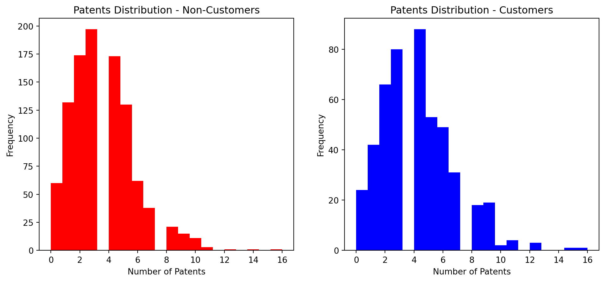
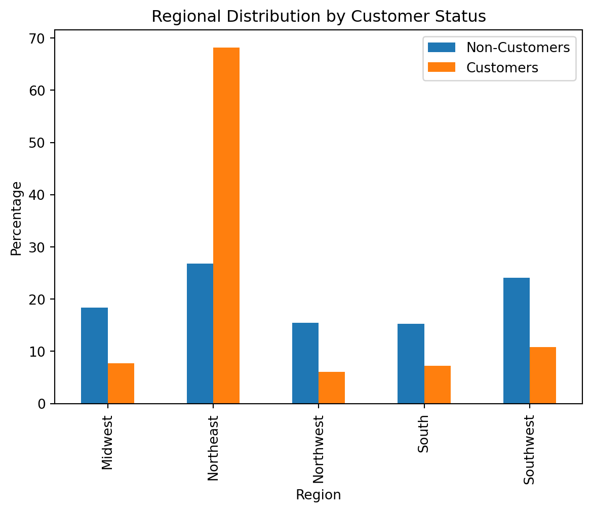
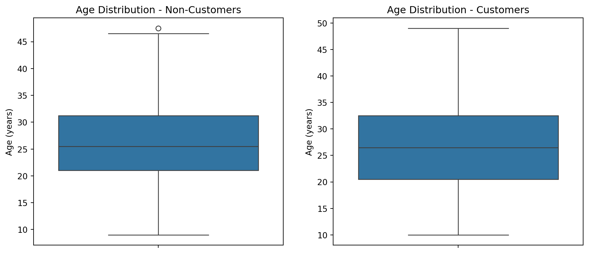
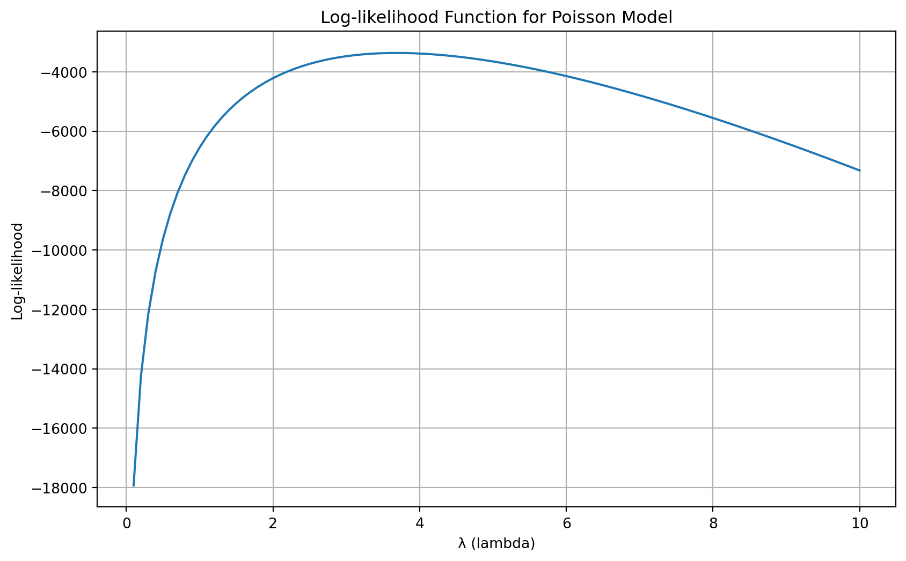

This report presents two case studies demonstrating the application of Poisson regression in business analytics. The first case study examines the relationship between Blueprinty’s software usage and patent success rates, while the second analyzes factors influencing AirBnB listing reviews. Both analyses utilize Poisson regression to model count data, accounting for various covariates and potential confounding factors.
Blueprinty Case Study
Introduction
Blueprinty is a small firm that makes software for developing blueprints specifically for submitting patent applications to the US patent office. Their marketing team would like to make the claim that patent applicants using Blueprinty’s software are more successful in getting their patent applications approved. Ideal data to study such an effect might include the success rate of patent applications before using Blueprinty’s software and after using it. Unfortunately, such data is not available.
However, Blueprinty has collected data on 1,500 mature (non-startup) engineering firms. The data include each firm’s number of patents awarded over the last 5 years, regional location, age since incorporation, and whether or not the firm uses Blueprinty’s software. The marketing team would like to use this data to make the claim that firms using Blueprinty’s software are more successful in getting their patent applications approved.
Data Analysis
Data
Let’s begin by examining the distribution of patents between Blueprinty customers and non-customers. This will give us our first insight into whether there might be a relationship between using Blueprinty’s software and patent success.
Code
import pandas as pdimport numpy as npimport matplotlib.pyplot as pltimport seaborn as snsfrom scipy.special import factorial, gammalnfrom scipy import optimizeimport statsmodels.api as smblueprinty_df = pd.read_csv('blueprinty.csv')print(blueprinty_df.head())
# Plot patent distributionsplt.figure(figsize=(12, 5))plt.subplot(1, 2, 1)plt.hist(blueprinty_df[blueprinty_df['iscustomer'] ==0]['patents'], bins=20, color='red')plt.title('Patents Distribution - Non-Customers')plt.xlabel('Number of Patents')plt.ylabel('Frequency')plt.subplot(1, 2, 2)plt.hist(blueprinty_df[blueprinty_df['iscustomer'] ==1]['patents'], bins=20, color='blue')plt.title('Patents Distribution - Customers')plt.xlabel('Number of Patents')plt.ylabel('Frequency')plt.show()# Calculate mean patentsmean_patents = blueprinty_df.groupby('iscustomer')['patents'].mean()print("Mean Patents by Customer Status:")print(f"Non-Customers (0): {mean_patents[0]:.2f}")print(f"Customers (1): {mean_patents[1]:.2f}")

Mean Patents by Customer Status:
Non-Customers (0): 3.47
Customers (1): 4.13
The histograms reveal right-skewed distributions for both groups, with customers showing higher mean patent counts. This suggests a potential association between software usage and patent success, though confounding factors must be considered.
Regional and Age Distribution
Next, we examine whether customer status is related to region or firm age, which could confound our analysis.
Code
# Analyze regional distributionplt.figure(figsize=(10, 5))regional_dist = pd.crosstab(blueprinty_df['region'], blueprinty_df['iscustomer'], normalize='columns') *100regional_dist.plot(kind='bar')plt.title('Regional Distribution by Customer Status')plt.xlabel('Region')plt.ylabel('Percentage')plt.legend(['Non-Customers', 'Customers'])plt.show()print("\nRegional Distribution (%):")print(regional_dist)plt.figure(figsize=(12, 5))plt.subplot(1, 2, 1)sns.boxplot(data=blueprinty_df[blueprinty_df['iscustomer'] ==0], y='age')plt.title('Age Distribution - Non-Customers')plt.ylabel('Age (years)')plt.subplot(1, 2, 2)sns.boxplot(data=blueprinty_df[blueprinty_df['iscustomer'] ==1], y='age')plt.title('Age Distribution - Customers')plt.ylabel('Age (years)')plt.show()print("Mean Age by Customer Status:")print(blueprinty_df.groupby('iscustomer')['age'].mean())
<Figure size 960x480 with 0 Axes>

Regional Distribution (%):
iscustomer 0 1
region
Midwest 18.351325 7.692308
Northeast 26.790972 68.191268
Northwest 15.505397 6.029106
South 15.309127 7.276507
Southwest 24.043180 10.810811

Mean Age by Customer Status:
iscustomer
0 26.101570
1 26.900208
Name: age, dtype: float64
Analysis reveals significant differences in both regional and age distributions between customers and non-customers, highlighting the need to control for these variables in our regression analysis.
Looking at the regional distribution, we can observe notable variations in customer adoption across different regions. The northeast region shows higher proportions of Blueprinty customers than others, suggesting potential geographic clustering. This could be due to various factors such as regional business networks, local marketing efforts or other.
The age comparison between customers and non-customers is particularly revealing. The boxplots show that Blueprinty’s customer base tends to differ in age composition from non-customers. This age disparity could be an important confounding factor when analyzing patent success rates, as older firms might naturally have more experience with the patent application process and more resources to dedicate to R&D efforts.
These systematic differences in both regional distribution and firm age underscore the importance of controlling for these variables in our subsequent analysis. Without accounting for these factors, we might incorrectly attribute differences in patent success rates to Blueprinty’s software when they could be partially explained by these underlying characteristics.
Estimation of Simple Poisson Model
Since our outcome variable of interest can only be small integer values per a set unit of time, we can use a Poisson density to model the number of patents awarded to each engineering firm over the last 5 years. We start by estimating a simple Poisson model via Maximum Likelihood.
For a sample of n independent observations \(Y_1, ..., Y_n\) from a Poisson distribution with parameter \(\lambda\), the likelihood function is:
This represents the probability of observing our data Y given the parameter \(\lambda\). The product comes from the independence of observations.
Code
def poisson_loglikelihood(lambda_, Y): Y = np.array(Y) n =len(Y) sum_Y = np.sum(Y) sum_log_factorial = np.sum(np.log(factorial(Y)))return-n * lambda_ + sum_Y * np.log(lambda_) - sum_log_factorial# Calculate MLEY = blueprinty_df['patents'].valueslambda_values = np.linspace(0.1, 10, 100)log_likelihoods = [poisson_loglikelihood(lambda_, Y) for lambda_ in lambda_values]plt.figure(figsize=(10, 6))plt.plot(lambda_values, log_likelihoods)plt.xlabel('λ (lambda)')plt.ylabel('Log-likelihood')plt.title('Log-likelihood Function for Poisson Model')plt.grid(True)plt.show()sample_mean = np.mean(Y)print(f"Sample mean (MLE for λ): {sample_mean:.2f}")

Sample mean (MLE for λ): 3.68
The plot above shows the log-likelihood as a function of \(\lambda\). The maximum occurs at the sample mean, which is the MLE for the Poisson rate parameter.
We can also confirm this by direct optimization:
Code
def neg_poisson_loglikelihood(lambda_, Y):return-poisson_loglikelihood(lambda_, Y)result = optimize.minimize(neg_poisson_loglikelihood, x0=np.mean(Y), args=(Y,), method='BFGS')print(f"MLE of λ from optimization: {result.x[0]:.2f}")
MLE of λ from optimization: 3.68
Poisson Regression Model
Next, we extend our simple Poisson model to a Poisson Regression Model such that \(Y_i = \text{Poisson}(\lambda_i)\) where \(\lambda_i = \exp(X_i'\beta)\). The interpretation is that the success rate of patent awards is not constant across all firms (\(\lambda\)) but rather is a function of firm characteristics \(X_i\). Specifically, we will use the covariates age, age squared, region, and whether the firm is a customer of Blueprinty.
To account for firm characteristics, we fit a Poisson regression model where the expected number of patents depends on age, age squared, region, and customer status.
Code
def neg_log_likelihood(beta, Y, X): beta = np.asarray(beta, dtype=np.float64) Y = np.asarray(Y, dtype=np.float64) X = np.asarray(X, dtype=np.float64) eta = X @ beta eta = np.clip(eta, -20, 20) lambda_ = np.exp(eta) log_likelihood = np.sum(Y * eta - lambda_ - gammaln(Y +1))return-log_likelihood
Let’s estimate the Poisson regression model and analyze the results:
By extending the model to include firm characteristics, we can better understand what drives patenting success. The Poisson regression results show:
Customer Status: Firms that use Blueprinty’s software are expected to receive more patents than similar firms that do not use the software. This effect remains after controlling for age and region, suggesting a positive association between software usage and patenting outcomes.
Firm Age: The negative coefficients for both age and age squared indicate an inverted-U relationship. Patent activity tends to increase with firm age up to a point, but then declines as firms become older. This pattern is common in innovation studies, where younger firms are often more dynamic, but very old firms may become less innovative over time.
Region: The region variables do not show strong or consistent effects, implying that, after accounting for other factors, location is not a major driver of patenting success in this sample.
Comparison with Built-in GLM
The results from the custom maximum likelihood estimation closely match those from the built-in GLM function. This agreement provides confidence in the validity of the findings and the reliability of the modeling approach.
Average effect of Blueprinty's software (iscustomer): 0.793 additional patents per firm
The analysis suggests that being a customer of Blueprinty’s software has a positive effect on patent success. Using a Poisson regression model, we estimated that firms using Blueprinty’s software are expected to file approximately 0.793 more patents on average compared to similar firms that do not use the software, holding all other firm characteristics constant. This estimate represents the average treatment effect across all firms and was derived by comparing predicted patent counts under hypothetical scenarios where all firms were either customers or non-customers.
Average Treatment Effect Interpretation
To assess the practical impact of Blueprinty’s software, we estimated the average treatment effect by comparing predicted patent counts for all firms as if they were customers versus non-customers. The analysis suggests that being a customer of Blueprinty’s software is associated with a meaningful increase in patent success. On average, firms using the software are expected to file nearly one additional patent over five years compared to similar firms that do not use the software, holding all other characteristics constant.
Business Implication:
These results support the marketing claim that Blueprinty’s software is linked to greater patenting success. While the analysis cannot prove causality, it provides strong evidence that customers of Blueprinty tend to outperform non-customers in terms of patent output, even after accounting for other important firm characteristics.
AirBnB Case Study
Introduction
AirBnB is a popular platform for booking short-term rentals. In March 2017, students Annika Awad, Evan Lebo, and Anna Linden scraped 40,000 Airbnb listings from New York City. The goal of this analysis is to understand what factors influence the number of reviews a listing receives, using Poisson regression, which is well-suited for modeling count data.
The dataset includes variables such as price, room type, instant bookability, and review scores for cleanliness, location, and value. We begin by loading and inspecting the data to ensure it is suitable for analysis.
df = pd.read_csv("airbnb.csv")print(df.head())
Unnamed: 0 id days last_scraped host_since room_type \
0 1 2515 3130 4/2/2017 9/6/2008 Private room
1 2 2595 3127 4/2/2017 9/9/2008 Entire home/apt
2 3 3647 3050 4/2/2017 11/25/2008 Private room
3 4 3831 3038 4/2/2017 12/7/2008 Entire home/apt
4 5 4611 3012 4/2/2017 1/2/2009 Private room
bathrooms bedrooms price number_of_reviews review_scores_cleanliness \
0 1.0 1.0 59 150 9.0
1 1.0 0.0 230 20 9.0
2 1.0 1.0 150 0 NaN
3 1.0 1.0 89 116 9.0
4 NaN 1.0 39 93 9.0
review_scores_location review_scores_value instant_bookable
0 9.0 9.0 f
1 10.0 9.0 f
2 NaN NaN f
3 9.0 9.0 f
4 8.0 9.0 t
The first few rows of the dataset give us a sense of the variables available and their formats. We see that the data includes both numeric and categorical variables, which will need to be processed appropriately for modeling.
Data Preparation
Before fitting our model, we clean the data by removing rows with missing values in key columns, converting categorical variables to numeric (using dummy variables), and ensuring all predictors are numeric. This step is crucial for the validity of our regression analysis.
After cleaning, our modeling dataset contains only numeric columns, with categorical variables such as room type represented as dummy variables. This ensures compatibility with the Poisson regression model.
Maximum Likelihood Estimation (MLE) by Hand
We first fit a Poisson regression model using maximum likelihood estimation (MLE) “by hand”. This approach allows us to understand the mechanics of model fitting and provides a benchmark for comparison with built-in functions.
X = df_model.drop(columns=["number_of_reviews"]).copy()X.insert(0, "intercept", 1)X = X.valuesy = df_model["number_of_reviews"].valuesinitial_beta = np.zeros(X.shape[1])# Run optimizer using your defined neg_log_likelihood(beta, Y, X)result = minimize( fun=neg_log_likelihood, x0=initial_beta, args=(y, X), method='L-BFGS-B')# Extract resultsestimated_beta = result.xconverged = result.successmessage = result.messageprint("Estimated coefficients:", estimated_beta)print("Converged:", converged)print("Message:", message)
The output above shows the estimated coefficients for each predictor, as well as information about the optimizer’s convergence. These coefficients represent the log effect of each variable on the expected number of reviews, holding other variables constant.
Model Fitting with Built-in GLM
To validate our custom MLE results, we also fit a Poisson regression model using the built in GLM function.
import statsmodels.api as sm# Prepare data for statsmodelsX_sm = df_model.drop(columns=["number_of_reviews"]).astype(float)X_sm = sm.add_constant(X_sm)y_sm = df_model["number_of_reviews"].astype(float)poisson_model = sm.GLM(y_sm, X_sm, family=sm.families.Poisson())poisson_results = poisson_model.fit()print(poisson_results.summary())
The regression summary above provides detailed information about each coefficient. When statistically significant a predictors has a effect on the number of reviews.
Interpretation of Results
The regression results provide several important insights for AirBnB hosts and platform managers:
Instant Bookable: Listings that allow instant booking tend to receive substantially more reviews. This suggests that making it easier for guests to reserve a listing can enhance visibility and guest engagement on the platform.
Review Scores:
Higher cleanliness scores are positively associated with the number of reviews, indicating that guests respond favorably to listings perceived as clean and well-maintained.
In contrast, the model finds that higher scores for location and value are unexpectedly associated with fewer reviews. This may be due to overlap between review categories or other guest behaviors not captured in the model.
Room Type: Entire homes and apartments generally receive more reviews than private or shared rooms. This likely reflects guest preferences for privacy and exclusive space.
Price: Although price shows a statistically significant effect, its influence is minimal in practical terms. Within the typical price range, adjusting nightly rates is unlikely to make a noticeable difference in review volume.
To increase the number of guest reviews, hosts may benefit most from enabling instant booking, offering entire units, and maintaining strong cleanliness ratings. These factors appear to matter more than pricing or even some other review dimensions.
Conclusion
This analysis demonstrates the application of Poisson regression in two distinct business contexts: patent analysis for Blueprinty and review analysis for AirBnB. In both cases, we successfully modeled count data using Poisson regression, accounting for various covariates and potential confounding factors.
For Blueprinty, our analysis revealed that firms using their software tend to have higher patent success rates, even after controlling for firm age and regional differences. The Poisson regression model provided valuable insights into the relationship between software usage and patent outcomes, supporting the marketing team’s claims while accounting for important confounding variables.
In the AirBnB case study, we identified key factors influencing the number of reviews, with instant bookability and room type showing particularly strong effects. The analysis provides actionable insights for hosts looking to increase their listing visibility and engagement.
Both case studies highlight the importance of proper model specification and the consideration of confounding factors when analyzing count data. The Poisson regression framework proved to be an effective tool for understanding these business problems, providing both statistical rigor and practical insights.